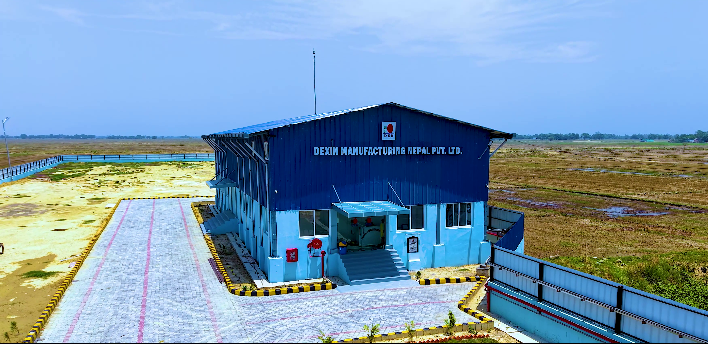
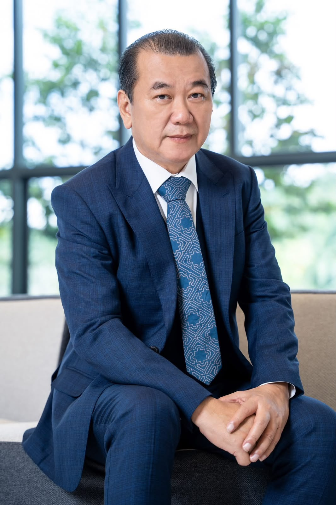
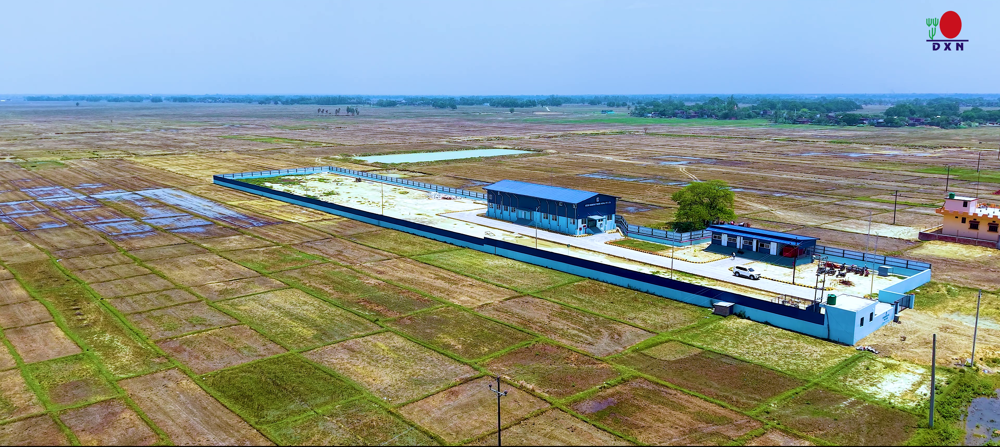

Quality first
Quality is considered throughout manufacturing, from process discipline to finished products.
ABOUT DEXIN
Dexin Manufacturing Nepal Pvt. Ltd. is a manufacturing facility of DXN Holdings Bhd, Malaysia, with a focus on consistent manufacturing, food safety, hygiene and responsible operations.


The driving force behind DXN.
DXN was founded by Datuk Lim Siow Jin, a graduate of the Indian Institute of Technology with a deep interest in mushrooms and their relationship with human health.
After more than 20 years of careful research and scientific analysis, Datuk Lim explored the specific properties of Ganoderma, also known as Lingzhi, and its traditional role in wellness. Inspired to share what he had learned, he introduced his knowledge to friends and colleagues who shared his interest in health.
His vision grew beyond sharing knowledge. He wanted to build a company that could help more people learn about and access products based on this remarkable mushroom. In 1993, that vision became reality when he established DXN in Kedah, Malaysia.
“A vision becomes meaningful when it is shared, developed, and carried forward through purposeful work.”Read the official founder profile
Selected awards and honours listed in DXN’s founder profile.
Awards and biographical details are presented as a summary of the supplied founder profile. Please refer to DXN’s official website for the latest and complete information.
Our work brings together people, processes and quality controls to support reliable manufacturing. We focus on disciplined operations, hygiene, food safety and continuous improvement across the workplace.
As part of the wider DXN organization, the Nepal facility operates with a strong emphasis on quality-focused manufacturing and responsible day-to-day execution.
Quality is considered throughout manufacturing, from process discipline to finished products.
Hygiene, controls and food safety practices are treated as essential parts of responsible manufacturing.
Strong operations depend on people working together across departments and responsibilities.
We look for practical ways to improve processes, consistency, compliance and everyday execution.

A professional manufacturing environment is built through clear standards, capable teams and attention to detail. Our departments work together to support manufacturing, quality, finance, IT and the wider operations of the facility.
Meet our teams →Explore the product portfolio, learn about our quality approach, visit the gallery or connect with the company directly.